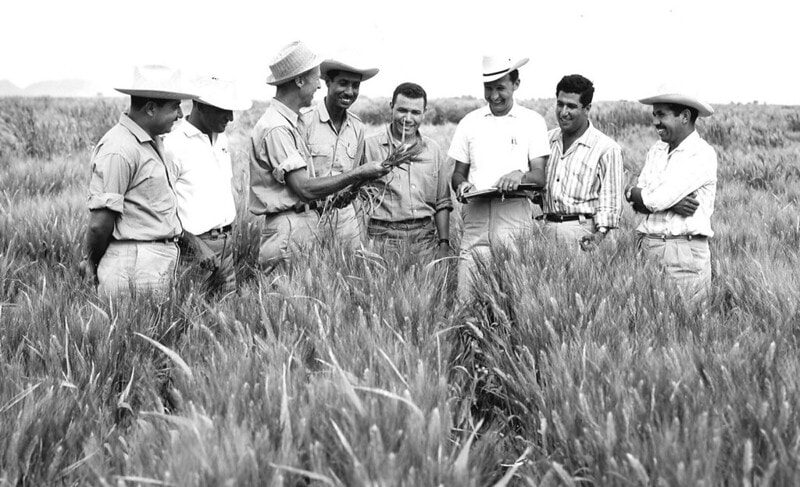

Dr.Norman Borlaug
The man who saved billions of lives

Dr.Norman Borlaug,thirdfrom the left,trains biologist in Mexico on how to increase,wheat yields-part of his life long war on hunger
Here's a timeline of Dr.borlaug's wife
- 1914- Born in Cresco,lowa.
- 1933- Leaves the family farm to attend the University of Mimesco,thanks to a Depression era program known as the
National Youth Administration
- 1935- Has to stop school and save up more money,Works in the Civillian Conservation Corps, Helping starving Americans,
I saw how food changed them
, he said.All of this left scars on me
- 1937- Finishes university and takes a job in the US Forestry Service
- 1938- Marries wife of 69 years Magret Gibson.Gets laid off due to budget cuts.Inspired by Elvin Charles Stakman,he returns to school study under stakman,who teaches him about breeding pest-resistent plants.
- 1941- Tries to enroll in the millitary after the pearl harbor attack,but is rejected.Instead, the millitary asked his work to work on waterproof glue,DDT to control malaria,disinfections, and other applied science.
- 1942- Recieves a Ph.D. in Genetics and Plant Pathology.
- 1944- Rejects a100% salary increase from Dupcat,leaves behind his pregnant wife,and flees to Mexico to head a new plant pathology program.Over the next 16 years,his team breeds 6,000 differentstrains of disease resistent wheat-including different varieties for each major climate on the Earth.
- 1945- Discovers a way to grow with twice each season,doubling wheat yields
- 1953- crosses a short,soundly dwarf breed of wheat with a high-yielding American breed ,creating a strain that responds well to fertilizer. It goes on to provide 95% of Mexico's wheat.
- 1962- Visits Delhi and brings his high yielding strains of wheat to the Indian subcontinent in time to help mitigate mass starvation due to a rapid increasing population
- 1970- recievs the Nobel Peace Prize
- 1983- help seven African countries to dramatically increase their maize and sorghum yields
- 1984- becomes a distinguished Professor at Texas A&M University.
- 2005- states
we will have to double the world food supply by 2005.
Argues that geneticall modified crops are the only way we can meet the demaand, as we run out of arable land.Says that GM crops are not inherently dangerous because we've been genetically modifying plants and animals for a long time.Long before we called it science,people were selecting the best breeds
- 2009- dies at the age of 95.
Borlaug's life and the achievement are testimony to the far-reaching contribution that one man's towering intelect,persistence and scientific vision can make to human peace and progress.
-Indian Prime Minister Manmohan Singh
If you have time you should read more about this incredible human being on his Wikipedia